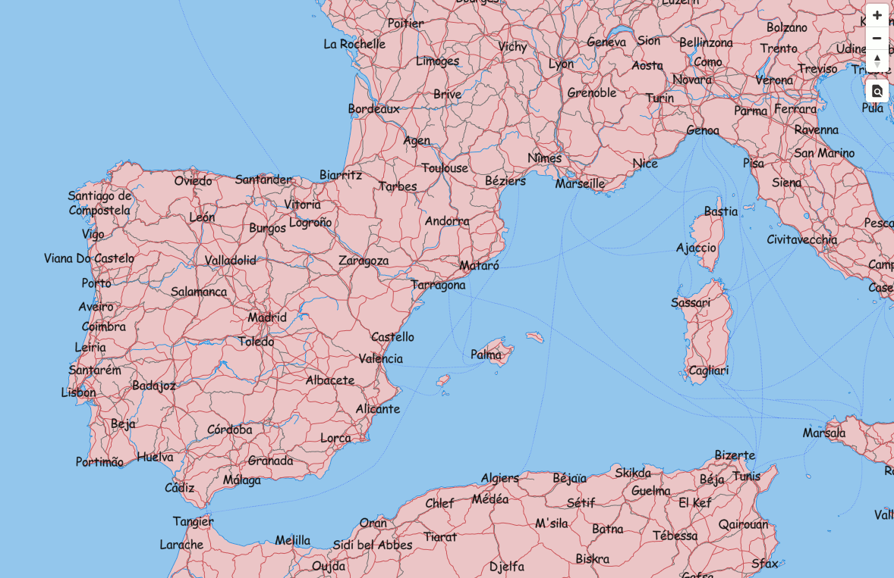
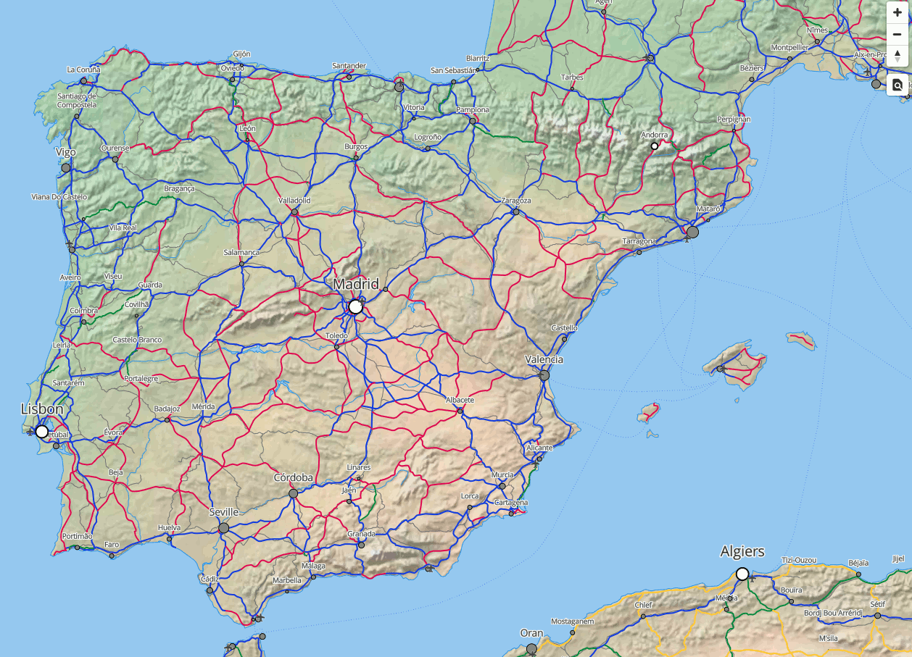

Cómo simbolizar teselas vectoriales
Maputnik
Es un editor visual gratuito y abierto para estilos Mapbox GL dirigidos tanto a desarrolladores como a diseñadores de mapas.
Se puede utilizar en línea en Maputnik editor o se puede hacer una instalación local.
Instalación
Se puede descargar la última versión de la página de releases.
En nuestro caso, la tenemos ya descargada en ~/Desktop/taller-vt/maputnik.
Para arrancar la versión local:
1 2 | cd ~/Desktop/taller-vt/maputnik live-server --port=8082 |
Abrir Maputnik en http://localhost:8082

Comenzar un estilo nuevo
En la barra de menú seleccionamos la opción Open. Del apartado Gallery Styles, seleccionamos Empty Style.
Agregar un origen de datos (Source)
En la barra de menú seleccionamos la opción Sources. En la parte inferior del diálogo está la sección: Add New Source.

- Como
Source IDponemosnaturalearth. - Como
Source TypeseleccionamosVector (TileJSON URL). - Como
TileJSON URLseleccionamoshttp://localhost:8081/data/natural_earth.json
También se podría usar como Source Type un Vector (XYZ URL), en cuyo caso también hay que
indicar el rango de zooms en que los datos son válidos.
Agregar sprite y glyphs
En la barra de menú seleccionamos Style Settings:

Name: Nombre del estilo. En nuestro caso pondremosNatural Earth.Sprite URL: Usaremos el sprite de uno de los estilos que tenemos publicados en tileserverhttp://localhost:8081/styles/osm-bright/spriteGlyphs URL: Accederemos a las tipografías publicadas en nuestro Tileserverhttp://localhost:8081/fonts/{fontstack}/{range}.pbf
Simbolización básica
Presionamos el botón de Add Layer:

Fondo
Añadimos una primera capa de fondo:
ID: identificador único de la capa. Pondremosfondo.Type: tipo de capa. Seleccionar la opción deBackground.
Seleccionamos el color en Paint properties => Color: "#F8F4F0".
El fondo del mapa pasa a un gris claro.
Océanos
Añadimos ahora los océanos:
ID: identificador único de la capa. Pondremosoceanos.Type: tipo de capa. Seleccionar la opción deFillya que la capa es de tipo polígono.Source: identificador del origen de datos. En nuestro caso pondremosnaturalearth.Source Layer: identificador de la capa dentro del origen de datos. Pondremosocean.
Aparecerán los océanos de color negro.
Simbolizamos la capa seleccionando un color RGB en Paint properties => Color: "#A0C8F0".
En el apartado inferior del panel de propiedades de la capa, vamos viendo la definición tal como se guardará en el fichero json de estilo:
1 2 3 4 5 6 7 8 9 | { "id": "oceanos", "type": "fill", "source": "naturalearth", "source-layer": "ocean", "paint": { "fill-color": "#A0C8F0" } } |
Maputnik no es más que un asistente gráfico para generar el fichero style.json.
Resto de capas básicas
El resto de capas se puede simbolizar procediendo de la misma manera:
| id | type | source-layer | color | otras propiedades "paint" |
|---|---|---|---|---|
| fondo | Background | -- | #F8F4F0 |
-- |
| oceanos | Fill | ocean | #A0C8F0 |
-- |
| tierra | Fill | land | #E6C7C7 |
-- |
| costa | Line | coastline | #4793E8 |
-- |
| rios | Line | rivers | #4793E8 |
-- |
| lagos | Fill | lakes | #A0C8F0 |
Outline color: #4793E8 |
| ferrocarril | Line | rail | #707070 |
-- |
| carreteras | Line | roads | #BF5757 |
-- |

Filtrar los datos a mostrar en una capa
Vamos a eliminar las rutas de ferry que se muestran como carreteras.
Hay dos maneras de definir un filtro en un estilo MapboxGL:
- Filters: La forma clásica, que implementa Maputnik: https://www.mapbox.com/mapbox-gl-js/style-spec/#other-filter
- Decision Expressions: La nueva forma, más potente, pero que Maputnik no implementa: https://www.mapbox.com/mapbox-gl-js/style-spec/#expressions-decision
Ahora aprenderemos a crear un Filter con Maputnik, y más adelante aplicaremos Expressions directamente sobre el fichero json de estilo.
En Maputnik, seleccionando la capa carreteras, apartado Filter: Presionamos el botón Add filter.
La condición será:
1 | featurecla == Road |

Comprobar que desaparecen las líneas de Ferry en el mapa.
Tip
Usa el Inspect Mode integrado en Maputnik para explorar los diferentes campos de una capa y sus posibles valores.
Ejercicio extra
Crea una nueva capa "ferrys" y aplica el filtro contrario para mostrar sólo las rutas de ferry.
Investiga la propiedad Dasharray para darle un aspecto de línea discontinua a las rutas.

Etiquetar una capa
-
Agregar la capa de ciudades. Presionar el botón de Add Layer y rellenar el formulario con la siguiente información:
ID:ciudadesType:Symbol, utilizado para mostrar entidades puntuales (iconos y etiquetas)Source:naturalearthSource Layer:cities
-
En el apartado Text layout properties:
- En la propiedad
Fieldescribir{NAME}(el nombre del campo a mostrar, entre llaves). - En la propiedad
Font, escribirComic Sans, tipografía que hemos generado y publicado en el apartado anterior (nota: el taller sobre cómo hacer mapas bonitos es esta tarde).
- En la propiedad
Utilizar un icono para simbolizar nuestra capa
-
Agregar la capa de aeropuertos. Presionar el botón de Add Layer y rellenar el formulario con la siguiente información:
ID:aeropuertosType:Symbol, utilizado para mostrar entidades puntuales (iconos y etiquetas)Source:naturalearthSource Layer:airports
-
En el apartado de Icon layout properties:
- En la propiedad
Image, escribirairport_11. Este nombre debe coincidir con alguna imagen definida en el sprite.
- En la propiedad
-
Comprobar que aparecen los aeropuertos en el mapa.
Tip
Estos son los iconos del sprite del estilo (osm-bright) que estamos utilizando:
https://github.com/openmaptiles/osm-bright-gl-style/tree/master/icons
Exportar el estilo creado
Seleccionar la opción Export, y luego el boton de Download para descargar el estilo en nuestro ordenador.
Descargamos el archivo, lo renombramos a style.json y lo movemos a la carpeta tileserver/styles/natural-earth/,
donde ya habíamos copiado los sprites generados en el apartado anterior.
1 | cp ~/Downloads/xxxxxx.json ~/Desktop/taller-vt/tileserver/styles/natural-earth/style.json |
Habrá que editar el fichero de configuración de tileserver tileserver/config.json para añadir el estilo:
1 2 3 4 5 6 7 8 9 10 11 12 13 14 15 16 17 | "styles": { "klokantech-basic": { "style": "klokantech-basic/style.json", "tilejson": { "bounds": [1.898, 41.246, 2.312, 41.533] } }, "osm-bright": { "style": "osm-bright/style.json", "tilejson": { "bounds": [1.898, 41.246, 2.312, 41.533] } }, "natural-earth": { "style": "natural-earth/style.json" } } |
Reiniciar tileserver y comprobar que ofrece el nuevo estilo de visualización.
Edición manual del estilo
Vamos a dejar Maputnik a un lado y vamos a editar el estilo json a mano.
Crear un visor para el nuevo estilo
Lo primero será crear un visor para los datos y estilo de Natural Earth partiendo del visor de Barcelona. También usaremos una copia local del estilo porque será más fácil ir viendo los cambios. Cada vez que guardemos en disco una modificación del fichero de estilo, podremos recargar directamente la página en el navegador para reflejar los cambios.
- Copiar el archivo
visor/barcelona.htmlenvisor/naturalearth.html - Además, hacer una copia de
tileserver/styles/natural-earth/style.jsonenvisor/natural-earth-style.json.
Editaremos visor/naturalearth.html y en la parte de <script> dejaremos sólo este código:
1 2 3 4 5 6 7 8 9 10 | var map = new mapboxgl.Map({ container: 'map', style: 'natural-earth-style.json', center: [1.5, 41], zoom: 5, hash: true }); map.addControl(new mapboxgl.NavigationControl()); map.addControl(new MapboxInspect()); |
Abriendo en el navegador http://127.0.0.1:8080/naturalearth.html debería verse:

Estilo avanzado basado en expresiones
El estilo basado en datos permite estilizar los datos en función del valor de sus propiedades. Por ejemplo, cambiar el radio de un círculo o el color de un polígono en función de un valor numérico, o usar lógica condicional para crear etiquetas multilingües.
Las expresiones de Mapbox GL se
pueden usar en cualquier propiedad de tipo layout, paint o filter de una layer.
Gracias a las expresiones, una regla de simbolización determinada puede calcularse como el resultado de un cálculo donde intervienen los valores de una o más propiedades de una feature. Pueden usarse operaciones lógicas, matemáticas, de generación de color, interpolaciones, etc.
Estilo basado en valores concretos de una propiedad
Abrir el fichero natural-earth-style.json y localizar el layer con id carreteras.
Vamos a asignar un color distinto en función del valor de la propiedad type.
Para ello usaremos la expresión Match,
que asigna a cada valor de entrada un valor de salida distinto (en nuestro caso, un color para
cada tipo de carretera):
1 2 3 4 5 6 | ["match", <propiedad>,
<valorentrada_1>, <salida_1>,
<entrada_2>, <salida_2>,
...,
<salida_por_defecto>
]
|
Para obtener el valor de la propiedad de una feature se usa la expresión Get: ["get", <nombre_propiedad>].
1 2 3 4 5 6 7 8 9 10 11 12 13 14 15 16 17 | { "id": "carreteras", "type": "line", "source": "naturalearth", "source-layer": "roads", "filter": ["all", ["==", "featurecla", "Road"]], "paint": { "line-color": [ "match", ["get", "type"], "Major Highway", "rgba(20, 52, 232, 1)", "Secondary Highway", "rgba(206, 32, 79, 1)", "Road", "rgba(49, 137, 52, 1)", "rgba(255, 204, 0, 1)" ], "line-width": 2 } } |
Estilo basado en el nivel del zoom
Localizar el layer con id ciudades.
Vamos a cambiar el tamaño del texto según el nivel de zoom del mapa, y de la propiedad SCALERANK del dato.
Usaremos la expresión Case, que tiene esta forma:
1 2 3 4 5 6 | ["case",
<condicion_1>, <salida_1>,
<condicion_2>, <salida_2>,
...,
<salida_por_defecto>
]
|
En nuestro caso la usaremos para decir cosas como:
- Si "SCALERANK" es menor que 2, aplica un tamaño de letra 20,
- Si "SCALERANK" está entre 3 y 5, aplica un tamaño de letra 14,
- En cualquier otro caso, aplica un tamaño de letra 10
Que quedaría expresado así:
1 2 3 4 5 6 | [ "case", ["<=", ["number",["get", "SCALERANK"]], 2], 20, ["<=", ["number",["get", "SCALERANK"]], 5], 14, 10 ] |
El operador "number" se usa para convertir el valor SCALERANK a un tipo numérico.
Y la combinaremos con la expresión Step, que tiene esta forma:
1 2 3 4 5 6 | ["step",
<entrada>, <salida_inicial>,
<umbral_1>, <salida_1>,
<umbral_2>, <salida_2>,
...
]
|
En nuestro caso la podemos usar para decir cosas como:
- Usa un tamaño de letra 18 para zooms por debajo de 5.
- Usa un tamaño de letra 20 entre el zoom 5 y 8.
- Usa un tamaño de letra 24 para zooms mayores que 8.
Que quedaría:
1 2 3 4 5 | ["step", ["zoom"], 18, 5, 20, 8, 24 ] |
Obviamente podemos combinar ambas expresiones, de forma que la salida para cada nivel de zoom no sea un tamaño de letra concreto, sino que dependa de "SCALERANK". Y nos queda el siguiente monstruo para el Layer:
1 2 3 4 5 6 7 8 9 10 11 12 13 14 15 16 17 18 19 20 21 22 23 24 25 26 27 28 29 30 31 32 33 34 | { "id": "ciudades", "type": "symbol", "source": "naturalearth", "source-layer": "cities", "layout": { "text-field": "{NAME}", "text-anchor": "bottom", "text-offset": [0, -1], "text-size": [ "step", ["zoom"], [ "case", ["<", ["number", ["get", "SCALERANK"]], 3], 18, 0 ], 5, ["case", ["<=", ["number",["get", "SCALERANK"]], 2], 20, ["<=", ["number",["get", "SCALERANK"]], 5], 14, 10 ], 8, ["case", ["<=", ["number",["get", "SCALERANK"]], 2], 24, ["<=", ["number",["get", "SCALERANK"]], 5], 18, 14 ] ] }, "paint": { "text-halo-color": "rgba(253, 253, 253, 1)", "text-color": "rgba(16, 16, 16, 1)", "text-halo-width": 1.5 } } |
Como se puede observar, las expresiones son tan potentes como difíciles de escribir bien a la primera.
Estilo basado en una propiedad
Vamos a crear un nuevo layer llamado ciudades-circle, y la vamos a definir a continuación de ciudades
y justo antes de aeropuertos. Dibujaremos un círculo cuyo tamaño será inversamente proporcional a la
propiedad SCALERANK.
Además, las capitales estatales se simbolizarán como un círculo blanco con un borde grueso, y el resto de ciudades con un círculo gris con borde más fino.
Usaremos la misma expresión Match que hemos visto anteriormente, aplicada a un color y a un grueso de línea.
Además, aplicaremos una expresión matemática ["-"], que resta dos valores, de manera que el tamaño del círculo
será 10 - SCALERANK:
1 2 3 4 5 6 7 8 9 10 11 12 13 14 15 16 17 18 19 | { "id": "ciudades-circle", "type": "circle", "source": "naturalearth", "source-layer": "cities", "paint": { "circle-color": [ "match", ["get", "ADM0CAP"], 0, "#888", "#FFF" ], "circle-stroke-width": [ "match", ["get", "ADM0CAP"], 0, 1, 2 ], "circle-radius": ["-", 10, ["get", "SCALERANK"]] } } |
Uso de fuentes de datos externas
Por último, vamos a añadir un fondo raster al mapa, procedente de otro tileserver.
- Añadiremos un nuevo
sourcede tiporaster, a continuación del sourcenaturalearth:
1 2 3 4 5 6 7 8 9 10 11 12 | "sources": { "naturalearth": { "type": "vector", "url": "http://localhost:8081/data/natural_earth.json" }, "relief": { "type": "raster", "tiles": ["http://naturalearthtiles.lukasmartinelli.ch/tiles/natural_earth_2_shaded_relief.raster/{z}/{x}/{y}.png"], "tileSize": 256, "maxzoom": 6 } } |
- Borraremos el
layerllamadotierra. - Añadiremos un nuevo
layerjusto después delfondoque se llamaráterreno:
1 2 3 4 5 | { "id": "terreno", "type": "raster", "source": "relief" } |
El resultado final de aplicar todos estos estilos tendrá este aspecto:

Ejercicio extra: uso de una fuente con iconos para simbolizar un punto
Si se ha hecho el ejercicio extra del apartado anterior, en el que creábamos una fuente a partir de una colección de iconos, ahora veremos cómo utilizarla en el Layer de aeropuertos:
1 2 3 4 5 6 7 8 9 10 11 12 13 14 15 16 17 | { "id": "aeropuertos", "type": "symbol", "source": "naturalearth", "source-layer": "airports", "layout": { "icon-image": "", "text-font": ["Geostart Regular"], "text-size": 25, "text-field": "," }, "paint": { "text-color": "#fabada", "text-halo-color": "#888", "text-halo-width": 2 } } |
En las líneas destacadas se observa cómo no se usa una icon-image, sino una etiqueta de texto (text-font, text-size
y text-field). En text-field se indica una coma ",", que corresponde al icono que queremos mostrar.
Al tratarse de una fuente, podemos indicar el tamaño que queramos sin miedo a obtener una imagen pixelada,
y aplicar otras propiedades como escoger color, halo, etc.
Como resultado del estilo indicado se simbolizarían los aeropuertos así: